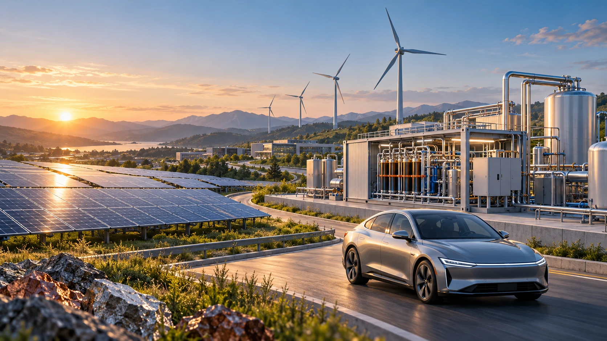

Postdoctoral Researcher · Yale University
Zhenyang Chen
Hi, I'm Zhenyang Chen. I'm a postdoctoral researcher at Yale University, working with Professor Yuan Yao on the sustainability of AI and computing systems. My current research investigates the environmental impacts associated with AI and computing infrastructure, and explores decarbonization pathways to help guide the development of sustainable computing systems.
I was fortunate to work with amazing mentors that inspired me to work at the intersection of chemical engineering, environmental engineering, and industrial ecology. During my PhD at Leiden University, I worked with Professors Hai Xiang Lin and René Kleijn, researching the critical material demand and associated environmental impacts of renewable energy systems and data center infrastructure. Before that, during my master's at Shanghai Jiao Tong University, I worked with Professors Zhenming Xu and Bo Niu, developing recycling technologies for electronic waste and analyzing the environmental impacts of e-waste recycling processes.
Research
Computing Systems & Data Center Sustainability
- Rethinking Data Center Sustainability Metrics Through a Life-Cycle Lens — Poster, GRC 2026
- Material efficiency key for decarbonizing global data centers — Under review
- Carbon footprint of 3D NAND flash and DRAM fabrication — ICCAD 2026

Renewable Energy: Material Demand & Environmental Impacts
- Metal requirements for global wind & solar grid systems to 2050 — EST 2023
- Fuel cell and electric vehicles: resource use & environmental impacts — RCR 2026
- Global supply risk assessment of clean energy metals — JCLEPRO 2022
E-Waste Recycling & Waste Valorization
- Supply chain and environmental implications of waste-to-graphite — Nature Rev. Clean Tech. 2026
- Analysis of cobalt flows in mainland China — JCLEPRO 2020
- Recovery of tantalum from waste capacitors by supercritical water treatment — ACS SCE 2017
Education
- PhD, Industrial Ecology (Environmental Science)Leiden University, Netherlands
- MS, Environmental Engineering and ScienceShanghai Jiao Tong University, China
- BS, Environmental EngineeringCentral South University, China